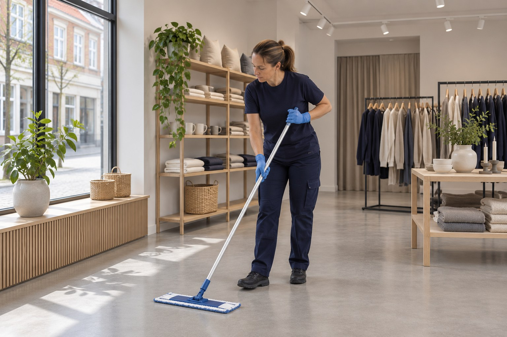

Butiksarealet
Vi aftaler gulve og tilgængelige flader med hensyn til inventar og udstillinger.
Erhvervsrengøring · Struer og Thyholm
Fast rengøring af butik, også uden for åbningstiden efter aftale. Vi afklarer kundezoner, personaleområder og adgang.
Få et skriftligt tilbudRing 77 17 85 88
Vi aftaler gulve og tilgængelige flader med hensyn til inventar og udstillinger.
Indgang og de aftalte adgangszoner beskrives i tjeklisten.
Vi aftaler omfanget i personalekøkken, toiletter og øvrige baglokaler.
Fotos kan sendes til kontakt@hutsol.dk. Formularen kan bruges til en kort beskrivelse.
Aftal adgang og flytning af varer eller løst inventar, hvor det er nødvendigt. Udpeg en kontaktperson.
Send oplysninger om opgaven, by og ønsket tidspunkt. Vi afklarer spørgsmål og behov for et besøg.
Du får et skriftligt tilbud. Omfang, pris og adgang aftales, før arbejdet starter.
Vi udfører det aftalte arbejde og gennemgår opgaven ud fra den aftalte liste.
Fast månedspris efter en gratis besigtigelse. Areal, besøgshyppighed, belastning og adgang indgår i vurderingen.
Se vores priser. En forespørgsel er ikke en bekræftet booking eller et løfte om, at opgaven kan udføres på to timer.
Opgaver og frekvenser samles i den aftalte tjekliste. Vi gennemgår resultatet ud fra aftalen. Ændringer afklares med den faste kontaktperson.
Beskriv jeres tidsvindue. Den konkrete arbejdstid aftales på forhånd.
Vinduespudsning aftales særskilt og kan indgå som en tillægsydelse.
Oplys gulvets materiale og særlige instruktioner, så metode og omfang kan afklares.
Vi hjælper i Struer, Holstebro, Lemvig og på Thyholm samt nærområder. Fortæl, hvor opgaven er.
Få et skriftligt tilbudRing til os